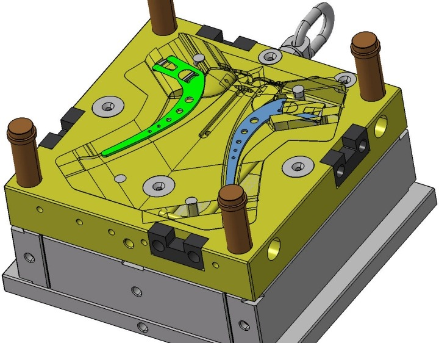
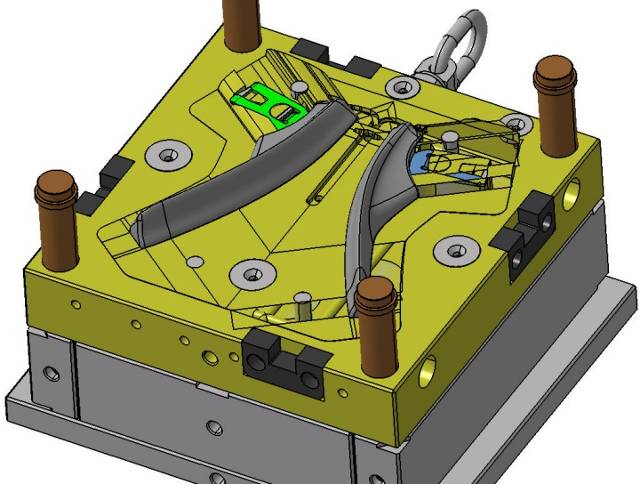
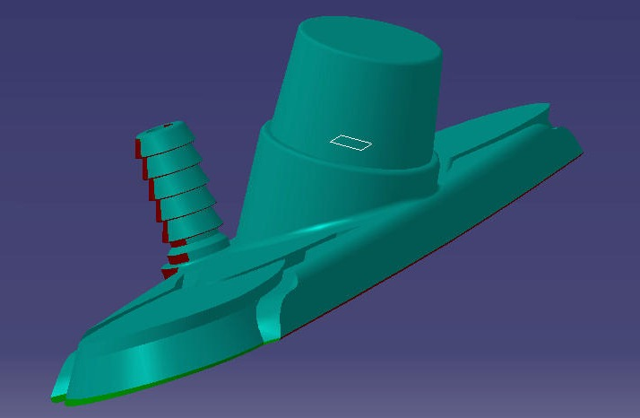
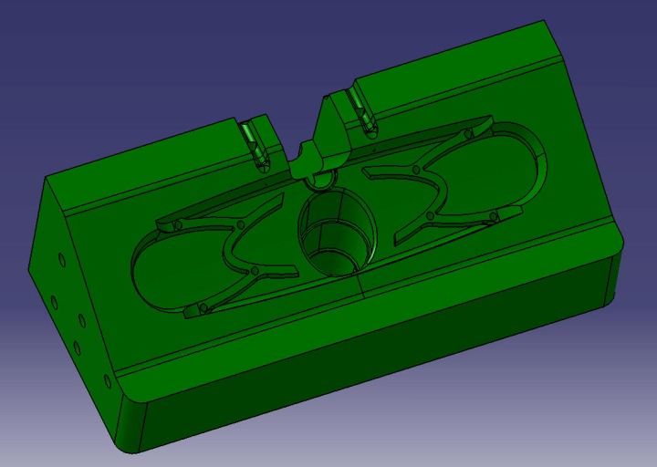
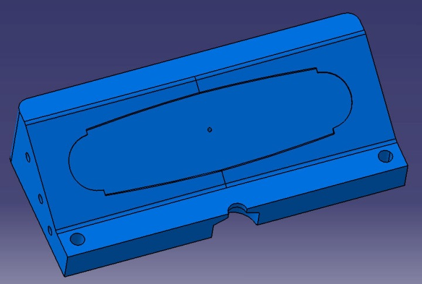
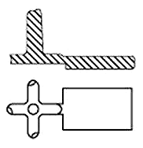
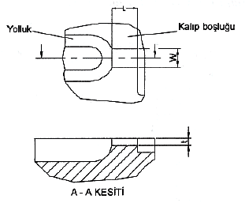
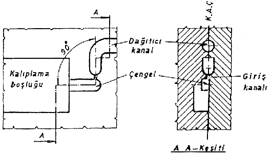
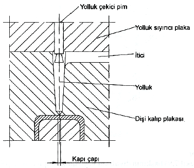
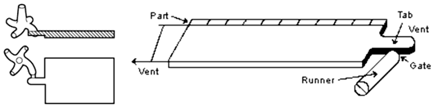

|

Þekil 3.19 Kalýba yerleþtirilmesi [5]

Þekil 3.20 Kalýplanmasý
3.10 Kalýp ayrým hatlarýnýn belirlenmesi
Kalýplanmýþ parça yüzeyindeki bölüm çizgisi, kalýbýn bölüm yüzeyi tarafýndan oluþturulur. Bunlar, parçanýn göze çarpmayan kýsýmlarýna getirilerek gizlenebilir. Böylece parça daha güzel görünür ve birçok durumda son yüzey iþlemlerinin yapýlmasýna gerek kalmaz.
Bölüm çizgisi parçanýn kalýplamasýný kolaylaþtýracak þekilde olmalýdýr. Bu yer genellikle çevrenin en büyük olduðu yerdir. Bölüm çizgisi, parçanýn düzlem bir yüzeye oturmasý ve bütün çevreyle temas etmesi için düz olmalýdýr [2].
Çok karmaþýk þekilli parçalarýn kalýptan çýkarýlabilmesi için kalýp birkaç yönde açýlmalýdýr. Ama bu durumun kalýp maliyetlerini artýracaðý açýktýr.
Tasarýmýn ilk aþamalarýnda tasarýmcý ile kalýpçý arasýndaki koordinasyon, bölüm yüzeyinin en iyi þekilde konumlandýrýlmasýný saðlayacaktýr.
Aþaðýda, deðiþik parçalar üzerinde bölüm yüzeyleri görülmektedir [6].



3.11 Yolluk aðýz (giriþ) tipleri
Giriþler, kullanýmda parça yapýþmasýnýn ya da çarpýþmasýnýn görüldüðü yerlere yerleþtirilmemelidir. Giriþ alaný; malzeme dolumundan dolayý genellikle parçanýn geri kalanýndan daha yüksek artýk gerilmelere sahip olacaktýr. Bu nedenle de parçanýn kalanýndan daha güçsüz olacaktýr.
Trim problemlerini minimize edecek þekilde giriþ kanallarý yerleþtirilmelidir [2].
Eðer mümkünse; tamamlanmamýþ dolum ya da batma lekelerini önlemek için giriþ en kalýn tabakada olmalýdýr. Bu ayrýca akýþ lekelerini ve burulmayý minimize eder.
Havalandýrmanýn tam karþýsýnda olmak þartýyla, ayýrma yüzeyine ya da itici pime giriþ yerleþtirilebilir [2].
Son giriþ parçalarý, gereðinden fazla malzeme dolmasýnýn gerekli olduðu durumlardan dolayý batmalarý temizlemek için mümkün olan yerde gerilmeler üretilir.
3.11.1 Kenar giriþ kanallarý
Kenar yolluk giriþi, en basit yolluk giriþ tasarýmýdýr ve imalat açýsýndan kolayca iþlenmesi de bir avantajdýr. Kenar yolluk giriþinin yapýmýnýn kolay olmasýna raðmen kullaným alaný sýnýrlýdýr. Genelde çok boþluklu iki tabakalý kalýplar için kullanýlýr ve orta kalýnlýkta ya da kalýn parçalar için uygundur. Ayrýca bu tasarýmýn kalýp doldurma karakteristiði iyi deðildir. Yolluk giriþ geometrisi, erimiþ plastiðin kötü bir þekilde giriþte yayýldýðýný gösterir. Bazý durumlarda, erimiþ plastik kalýp giriþindeki akýþýnda hiç yayýlmaz parça içinde kývrýmlar oluþturur. Kenar yolluk giriþi kullanýldýðýnda parçada yüzey kalitesi ve estetik aranmamalýdýr.

Þekil 3.21 Kenar giriþ kanalý [3]
3.11.2 Çengel Giriþ Kanallarý
Parça dayanýmýný arttýrmak amacýyla akrilik plastiklerin kalýplanmasýnda kullanýlýr. Bu tip giriþ kanallý kalýplarda daðýtýcý kanaldan gelen plastik madde çengel giriþ kanalýna yöneltilir ve buradan da kalýplama boþluðuna iletilir. Çengel tipi giriþ kanallarý genellikle kare veya dikdörtgen kesitli yapýlýr. Bazen de yarým yuvarlak kesitli yapýlabilirler. Giriþ kanalý boyutlarý ise, kalýplanacak plastik maddenin cinsine ve kalýplama hacmine baðlýdýr.

Þekil 3.22 Çengel giriþ kanalý [3]
3.11.3 Ýðne giriþ kanallarý
Bu giriþler problemlere neden olurlar. Problem her zaman uzun, ince ve sivri olan bu giriþlerde deðil yakýnlarýndadýr. Giriþ alanýnýn uzunluðu çok kýsa gözükür, ama plastik donduðunda giriþ týkanacaðýndan, efektif alan uzunluðu çapý deðiþmelidir. Ýðne giriþ her zaman sonlamayý (finishing) minimize etmek ve merkezi giriþ yerleþimi saðlamak için kenar giriþinin yerine geçer. Otomatik giriþin gerekli olduðu uygulamalarda iyidir ve sadece ince kýsýmlar için uygundur. Bu tip giriþ kullanýmý esnasýnda otomatik olarak kapýnýn kopmasýna imkân saðlar. Giriþ kopmasý genellikle yolluklarý arkasýndan çekerek koparmak suretiyle saðlanýr, bu da genellikle emici veya yolluðun arkasýna gömülmüþ çekici pimlerle yapýlýr.
Genellikle bu tip giriþ kesitler sýcak yolluk sistemlerinde tercih edilirler.

Þekil 3.23 Ýðne giriþ [3]
3.11.4 Kulaklý giriþ kanallarý (Tab gate)
Kulaklý giriþ fýþkýrmayý engelleyen ve kalýp gerinimlerini minimize eden bir kýsýtlý giriþtir. Kulaklý giriþ büyük dekoratife parçalarýn yapýmýnda kullanýlýr. Ancak kulak kýsmýnýn parçadan koparýlmasý pahalý bir operasyondur. Bundan dolayý nereye yerleþtirileceði çok önemlidir. Genelde parça basýldýktan sonra yerinde kalmasýnýn saðlandýðý yerlere konulmalýdýr.

Þekil 3.24 Kulaklý giriþ kanalý [3]
|